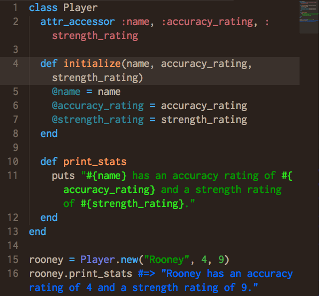
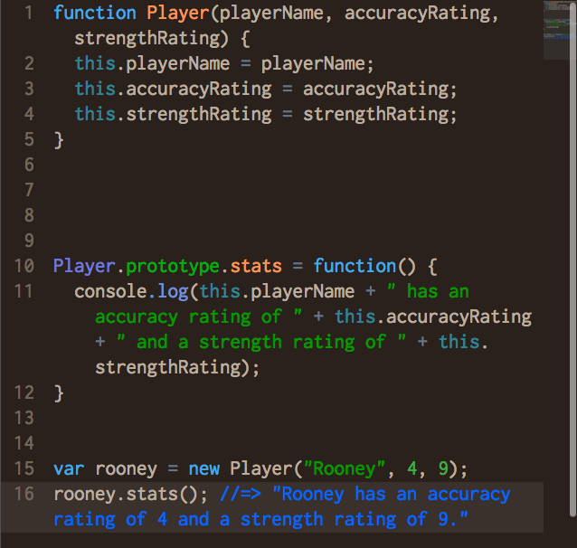

CLASSES & CONSTRUCTORS
Sun 5/24/2015
I got into programming by experimenting with JavaScript but I was a beginner at best. Now, coming back to it after diving into Ruby, I have a much better understanding of its strong and weak points. It is not as object oriented as Ruby, and as a result its approach to object construction seems more like something that was slightly jury rigged as opposed to being a building block of the language.
Classes and constructors are essentially templates for object creation. So Ruby has this special type of object that allows you to directly associate variables and methods with each new instance. JavaScript on the other hand allows you to use a function as a constructor to create variables that serve as properties which can point to data or functions or prototype properties. Whhhaaat! Even just comparing the concepts in plain English you can see that Ruby has the more elegant, natively object oriented solution. Lets compare syntax...


As you can see on line 16 on both examples, these two blocks of code do essentially the same thing. They create object templates that allow you to pass in properties or attributes upon instantiated. They each associate a funciton for printing out stats that can be called directly on the object as well.
To me the biggest differences are in readability. It looks like fewer lines of code for the JavaScript constructor but the Ruby class is easy to decipher. The JS one has a lot of unneccesary key words and the function definition for printing stats is not self contained in the constructor. At this point you can tell what the basic differences are, but its good to know that you can have the same functionality and level of object orientation in both languages. At this point its probably also obvious which one I prefer!